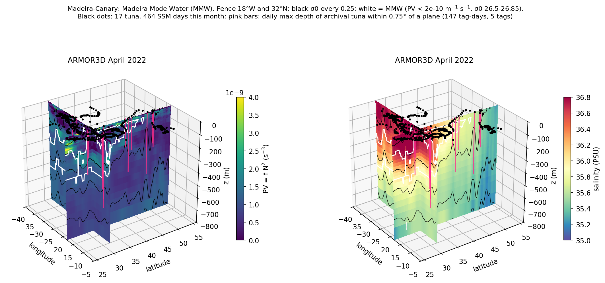

A fence through Madeira Mode Water


Mode water is a thick, nearly uniform layer of water left behind by deep winter mixing. Once it's capped by summer warming, it sits below the surface like a fossil of last winter. North of Madeira that layer is Madeira Mode Water, and the cleanest way to find it is potential vorticity: q = fN², the Coriolis parameter times the squared buoyancy frequency. Where the water column is barely stratified, N² and therefore q drop toward zero, so mode water shows up as a low-q pool sandwiched between more stratified layers. I made this "fence" (two cross-sections slotted together) to see the layer in three dimensions instead of one slice at a time, and then to drop tuna positions and dive depths onto it to ask whether bluefin interact with this layer. What fascinates me is that a conserved quantity from geophysical fluid dynamics doubles as a practical habitat label: the same number that tells a physicist the layer will drift for months without losing its identity might also tell us where a predator finds its food.
Part of: Atlantic bluefin tuna × mode water × BGC-Argo optics (Block Lab)